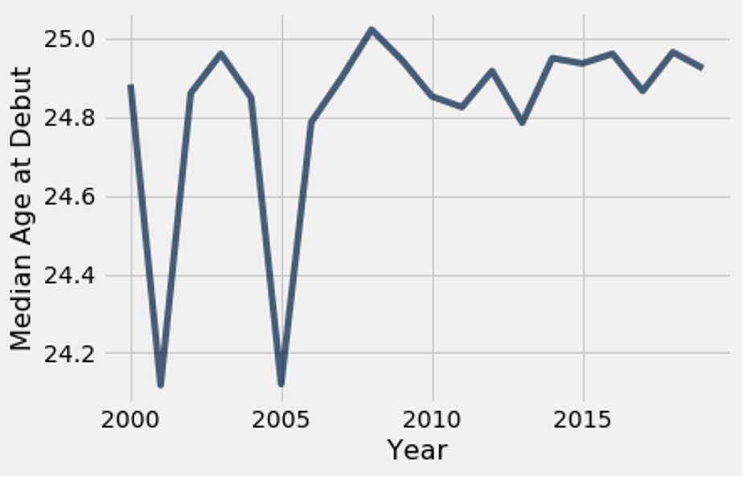
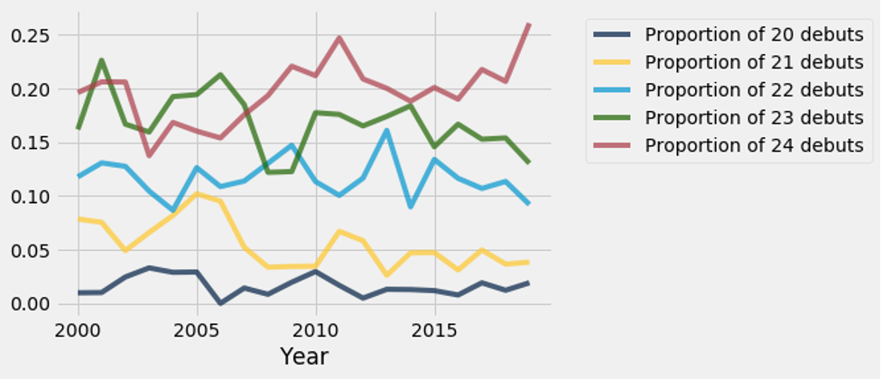

Let the Kids Play?
By Atticus Ginsborg | November 29, 2020
If you watched any baseball on TV over the last few years you’ve probably seen some variation on the MLB’s “Let the Kids Play” ad campaign. No matter which variation of the ad you’ve watched you’ll see some of the major league’s best young talent showing the emotion and flair commonly associated with the youth of the MLB’s next generation of talent. These few players are touted as the MLB’s future and a large part of why the MLB is getting younger as a whole. All of these players were given opportunities to join the major leagues at a young age and were allowed time to establish themself. This is key, as in the MLB’s veteran based power structure, historically players are expected to keep somewhat reserved until they’ve proven themselves and these players early debuts meant they could start expressing themselves earlier in their careers. However, these are only a few of the league’s 780 plus major leaguers each year and I wanted to take a look at whether the MLB is actually “Letting the Kids Play.”
To do this I decided to look at as a proxy the average age at debut. First I looked at the number of debuts per year.
As expected, the MLB has consistently seen an increase in the number of debuts per year to compensate for the fact that fewer and fewer veterans are being kept around. However, the number of debuts each year alone is not indicative of whether or not the MLB’s actually letting the Kids Play. There’s a big difference between an increase in players 26 and older debuting and younger players getting an opportunity in the show. Those older players often take years to get established and by that time are often past their peak, which means they run into the MLB’s other inhibitor of self-expression, no longer being a good player. No one wants to see bat flips on singles. So, I looked at the average number of debuts for each age group between 19 and 32 because they are the age groups where there was consistently at least 1 debut per year. As you can see below, the vast majority (about 96%) of debuts on average over the last 20 years are concentrated between the ages of 20 and 29, although there is definitely some variation from year to year.
Since there was a significant amount of fluctuation from year to year in some of these proportions, I want to key in on the proportion of debuts for players above and below the median age at debut, which has consistently stayed between 24 and 25 as seen below.
First, taking a look at the players who debuted between the ages of 20 and 24 we see some interesting trends.
We’ve seen a decrease in the share of overall debuts over the last 20 years for the youngest players, with the only exception being the 20 year old debuts which have stayed consistently low and the 24 year old debuts who have actually seen a large increase. However, if younger players are debuting less relative to the amount of league wide debuts, there must be an increase elsewhere, and as we can see below, debuts aging 25-28 have all seen at least consistency or increases, with the proportion of 25 year old debuts increasing all the way up to almost 25% before dropping back down to under 20% this year.
To summarize, players between 20 and 23 are being called up less than ever before, relative to the number of debuts in the league, players older than 25 are generally being called up at a similar amount, relative to the total number of debuts, and so have seen their debuts rise with the league’s increase, and 24 and 25 year old players have seen their shares of total debuts skyrocket, with those two ages making up over 50% of all debuts in some years and having large increases in the overall number of debuts. This has interesting implications because it suggests that the overall league increase in debuts is a result of more players being called up at 24 and 25 years old, along with a few older debuts not as a result of the MLB bringing up more young talent earlier. And if a large part of “Letting the Kids Play” is due to them being given call-ups earlier, before they’re forced into baseball’s homogenized culture, then I think in that aspect, the MLB is most certainly not “Letting the Kids Play.” *All data taken from Sean Lahman’s Baseball database.